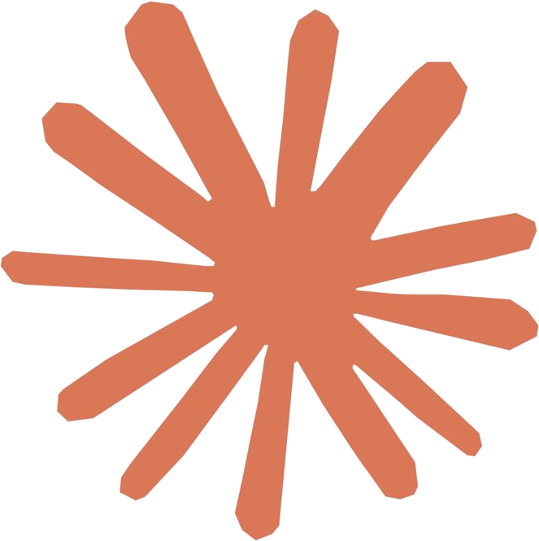

<!doctype html>
<html lang="fr" data-resolution="portrait">
  <head>
    <meta charset="UTF-8" />
    <meta name="viewport" content="width=1080, height=1920" />
    <script src="assets/gsap.min.js"></script>
    <script src="assets/vo-words.js"></script>
    <script src="assets/series.js"></script>
    <script src="assets/data.js"></script>
    <style>
      /* Reel « L'IPO d'Anthropic : mieux vaut être patient » (72,64 s). Fond blanc FinanceData, bleu sombre pour les moments forts. */
      @font-face { font-family: "Helv"; src: local("Helvetica Bold"), local("Helvetica-Bold"), url("assets/fonts/NimbusSans-Bold.otf"); font-weight: 700; }
      @font-face { font-family: "Plex"; src: url("assets/fonts/IBMPlexMono-Bold.ttf"); font-weight: 700; }
      @font-face { font-family: "Lora"; src: url("assets/fonts/Lora.ttf"); font-weight: 400 700; }
      @font-face { font-family: "Archivo"; src: url("assets/fonts/RobotoCondensed.ttf"); font-weight: 100 900; }
      @font-face { font-family: "Mono"; src: url("assets/fonts/MartianMono.ttf"); font-weight: 100 900; font-stretch: 75% 112.5%; }
      @font-face { font-family: "Typo"; src: url("assets/fonts/CourierPrime-Regular.ttf"); font-weight: 400; }
      @font-face { font-family: "Display"; src: url("assets/fonts/inter-display-latin-var.woff2"); font-weight: 100 900; }
      * { margin: 0; padding: 0; box-sizing: border-box; }
      html, body { width: 1080px; height: 1920px; overflow: hidden; background: #f6f8fc; }
      #root { width: 1080px; height: 1920px; position: relative; overflow: hidden; font-family: "Display", sans-serif; color: #00194b; background: #f6f8fc; font-feature-settings: "tnum" 1; -webkit-font-smoothing: antialiased; }
      #bg { position: absolute; inset: 0; background: #f6f8fc; }
      #avatar { position: absolute; left: 380px; top: 500px; width: 320px; height: 320px; opacity: 0; }
      #avatar .pic { position: absolute; left: 20px; top: 20px; width: 280px; height: 280px; border-radius: 50%; overflow: hidden; border: 8px solid #00194b; }
      #avatar .pic img { width: 100%; height: 100%; display: block; }
      .src { position: absolute; left: 100px; right: 100px; font-size: 22px; font-weight: 600; color: #5b6b8a; }
      #bg .grid { position: absolute; inset: 0; background-image: linear-gradient(rgba(0,25,75,.05) 1px, transparent 1px), linear-gradient(90deg, rgba(0,25,75,.05) 1px, transparent 1px); background-size: 48px 48px; background-position: 12px 0;
        -webkit-mask-image: radial-gradient(ellipse 70% 50% at 50% 46%, #000 30%, transparent 85%); mask-image: radial-gradient(ellipse 70% 50% at 50% 46%, #000 30%, transparent 85%); }
      .a { position: absolute; }
      .scene { position: absolute; inset: 0; opacity: 0; }
      .navy { background: #00194b; }
      .navy .grid { position: absolute; inset: 0; background-image: linear-gradient(rgba(255,255,255,.045) 1px, transparent 1px), linear-gradient(90deg, rgba(255,255,255,.045) 1px, transparent 1px); background-size: 48px 48px; background-position: 12px 0;
        -webkit-mask-image: radial-gradient(ellipse 70% 50% at 50% 46%, #000 30%, transparent 85%); mask-image: radial-gradient(ellipse 70% 50% at 50% 46%, #000 30%, transparent 85%); }
      svg { position: absolute; overflow: visible; }
      svg text { font-family: "Display"; font-feature-settings: "tnum" 1; }
      .cap-line { position: absolute; left: 100px; right: 100px; top: 1400px; text-align: center; opacity: 0; }
      .cap-box { display: inline-block; padding: 8px 22px 13px; border-radius: 4px; background: rgba(30,34,42,.78); font-weight: 700; font-size: 52px; line-height: 1.12; letter-spacing: -.05em; color: #fff; white-space: nowrap; }
    </style>
  </head>
  <body>
    <div id="root" data-composition-id="main" data-start="0" data-duration="76.25" data-width="1080" data-height="1920">
      <audio id="vo" src="assets/voix.mp3" data-start="0" data-duration="76.25" data-track-index="1"></audio>
      <div id="bgs" class="clip" data-start="0" data-duration="76.25" data-track-index="2" style="position:absolute; inset:0"><div id="bg"><div class="grid"></div></div></div>
      <div id="stage" class="clip" data-start="0" data-duration="76.25" data-track-index="3" style="position:absolute; inset:0"></div>
      <video id="v-dario" class="clip" src="assets/video/dario.mp4" data-start="0" data-duration="2.0" data-track-index="6" muted playsinline style="position:absolute; left:0; top:513px; width:1080px; height:894px; object-fit:cover"></video>
      <video id="v-claude" class="clip" src="assets/video/claude-usage.mp4" data-start="18.06" data-duration="2.83" data-track-index="7" muted playsinline style="position:absolute; left:0; top:664px; width:1080px; height:592px; object-fit:cover"></video>
      <div id="top" class="clip" data-start="0" data-duration="76.25" data-track-index="5" style="position:absolute; inset:0; pointer-events:none"></div>
    </div>
    <script>
      (function () {
        var NS = "http://www.w3.org/2000/svg", tl = gsap.timeline({ paused: true }), END = 76.25;
        var st = document.getElementById("stage"), top = document.getElementById("top");
        var INK = "#00194b", SOFT = "#5b6b8a", DN = "#ff1744", DNT = "#d50f35", GR = "#00b85c", GRT = "#00843f", CY = "#7dd0f5";
        function div(p, html, style, cls) { var d = document.createElement("div"); d.className = cls || "a"; d.innerHTML = html; d.setAttribute("style", style || ""); p.appendChild(d); return d; }
        function el(s, tag, a, text) { var e = document.createElementNS(NS, tag); for (var k in a) e.setAttribute(k, a[k]); if (text != null) e.textContent = text; s.appendChild(e); return e; }
        function svg(p, x, y, w, h) { var g = document.createElementNS(NS, "svg"); g.setAttribute("width", w); g.setAttribute("height", h); g.style.left = x + "px"; g.style.top = y + "px"; p.appendChild(g); return g; }
        function inn(n, t, d, y) { tl.fromTo(n, { opacity: 0, y: y == null ? 12 : y }, { opacity: 1, y: 0, duration: d || .4, ease: "power2.out", immediateRender: false }, t); return n; }
        function out(n, t, d) { tl.to(n, { opacity: 0, duration: d || .2 }, t); return n; }
        function scene(t0, t1, cls) { var s = div(st, "", "", "scene" + (cls ? " " + cls : "")); if (cls === "navy") div(s, "", "", "grid"); tl.set(s, { opacity: 1 }, t0); tl.set(s, { opacity: 0 }, t1); return s; }

        // transitions fluides : fondu court + léger glissement, images fixes (pas de zoom sur les photos)
        function sc(t0, t1, cls) { var s = div(st, "", "", "scene" + (cls ? " " + cls : "")); tl.fromTo(s, { opacity: 0 }, { opacity: 1, duration: .18, ease: "power1.out", immediateRender: false }, t0); tl.set(s, { opacity: 0 }, t1 + .18); return s; }
        function full(s, src, pos, dark) { div(s, "", "inset:0"); if (dark) div(s, "", "inset:0; background:" + dark); }
        function rise(n, t, d) { tl.fromTo(n, { opacity: 0, y: 40 }, { opacity: 1, y: 0, duration: d || .4, ease: "power3.out", immediateRender: false }, t); return n; }

        function fade(n, t, d) { tl.fromTo(n, { opacity: 0 }, { opacity: 1, duration: d || .3, ease: "power1.out", immediateRender: false }, t); return n; }
        // 1. « N'achetez pas l'action d'Anthropic aujourd'hui » (0 → 2,0) : Dario Amodei à Davos (vidéo, piste 6)
        (function () { var s = sc(0, 2.0, "navy"); s.style.opacity = 1;
          div(s, "", "left:485px; top:280px");
          div(s, "Dario Amodei, PDG d'Anthropic", "left:0; right:0; top:430px; text-align:center; font-size:34px; font-weight:700; letter-spacing:-.03em; color:#cfd8ea"); })();
        // 2. « sans connaître ce qu'a découvert » (2,0 → 3,3) : Claude + Anthropic, fixes
        (function () { var s = sc(2.0, 3.3);
          div(s, "", "left:440px; top:600px");
          div(s, "", "left:180px; top:880px");
          div(s, "Entre en Bourse aujourd'hui", "left:0; right:0; top:1010px; text-align:center; font-size:46px; font-weight:700; letter-spacing:-.04em; color:" + SOFT); })();
        // 3. « ce chercheur américain. Lui, c'est Jay Ritter, professeur… » (3,3 → 7,6) : portrait plein écran, fixe, nom aligné à gauche
        (function () { var s = sc(3.3, 7.6); full(s, "ritter-portrait.jpg", "50% 30%", "linear-gradient(180deg, rgba(0,12,40,0) 45%, rgba(0,12,40,.75) 100%)");
          var n = div(s, "Jay Ritter", "left:100px; top:1180px; font-size:96px; font-weight:700; letter-spacing:-.055em; color:#fff; opacity:0"); fade(n, 5.1);
          var r = div(s, "Professeur de finance<br>à l'université de Floride", "left:100px; top:1290px; font-size:40px; font-weight:600; letter-spacing:-.03em; line-height:1.2; color:#e6ecf7; opacity:0"); fade(r, 5.95); })();
        // 4. « Depuis plus de 30 ans, il étudie… » (7,6 → 12,0)
        (function () { var s = sc(7.6, 12.0, "navy"); full(s, "ritter-nb.jpg", "50% 30%", "linear-gradient(180deg, rgba(0,12,40,.45), rgba(0,12,40,.85))");
          var t = div(s, "+ de 30 ans", "left:0; right:0; top:700px; text-align:center; font-size:150px; font-weight:700; letter-spacing:-.06em; line-height:1; color:#fff; opacity:0"); fade(t, 8.3);
          var u = div(s, "à étudier les entrées en Bourse", "left:0; right:0; top:880px; text-align:center; font-size:48px; font-weight:700; letter-spacing:-.04em; color:#e6ecf7; opacity:0"); fade(u, 9.3); })();
        // 5. « Et ce qu'il a trouvé devrait vous faire réfléchir » (12,0 → 14,49) : le chiffre flouté
        (function () { var s = sc(12.0, 14.49, "navy");
          var h = div(s, "−18 %", "left:0; right:0; top:700px; text-align:center; font-size:260px; font-weight:700; letter-spacing:-.06em; line-height:1; color:#fff; filter:blur(30px); opacity:0"); fade(h, 12.05, .4);
          var t = div(s, "Ce qu'il a trouvé", "left:0; right:0; top:1020px; text-align:center; font-size:52px; font-weight:700; letter-spacing:-.04em; color:" + CY + "; opacity:0"); fade(t, 12.4); })();

        // 6. Générique « le guide de la culture financière, épisode 6 » (14,49 → 18,0), d'après le visuel de la série
        (function () { var t0 = 14.49, s = sc(t0, 18.0); s.style.background = "#f2f2f4";
          div(s, "<svg width='1080' height='1920' style='position:absolute; inset:0'><filter id='gr'><feTurbulence type='fractalNoise' baseFrequency='.9' numOctaves='2' stitchTiles='stitch'/><feColorMatrix values='0 0 0 0 0  0 0 0 0 0  0 0 0 0 0  0 0 0 .09 0'/></filter><rect width='1080' height='1920' filter='url(#gr)'/></svg>", "inset:0");
          div(s, "", "inset:0; background:radial-gradient(ellipse 75% 60% at 50% 48%, rgba(0,0,0,0) 55%, rgba(0,0,0,.1) 100%)");
          // vraies courbes : VIX en haut, S&P 500 et Nasdaq en bas (données Yahoo, 2015 → 2026)
          var g = svg(s, 0, 0, 1080, 1920), D = window.SER;
          function line(v, y0, y1, log, op, w, t, dur) { var lo = Math.min.apply(0, v), hi = Math.max.apply(0, v), f = log ? Math.log : function (x) { return x; }, d = "";
            v.forEach(function (x, i) { var X = -20 + i / (v.length - 1) * 1120, Y = y1 - (f(x) - f(lo)) / (f(hi) - f(lo)) * (y1 - y0); d += (i ? "L" : "M") + X.toFixed(1) + " " + Y.toFixed(1); });
            var p = el(g, "path", { d: d, fill: "none", stroke: "#7c96e6", "stroke-width": w, "stroke-opacity": op, "stroke-linejoin": "round" }); var L = p.getTotalLength(); p.style.strokeDasharray = L + " " + L; p.style.strokeDashoffset = L;
            tl.fromTo(p, { strokeDashoffset: L }, { strokeDashoffset: 0, duration: dur, ease: "power1.out", immediateRender: false }, t); }
          line(D.vix, 60, 640, true, .75, 3.5, t0, 2.4);
          line(D.ndx, 1180, 1880, true, .35, 3, t0 + .1, 2.6);
          line(D.spx, 1250, 1860, true, .75, 3.5, t0, 2.6);
          // bloc aligné comme la charte : titre calé à gauche, bandeau de même largeur, « épisode » calé à droite
          var blk = div(s, "", "left:0; right:0; margin:auto; width:max-content; top:720px");
          var row = div(blk, "", "position:relative; font-family:Helv, Helvetica, sans-serif; font-size:78px; font-weight:700; letter-spacing:-.035em; line-height:1.15; color:#00194B; white-space:nowrap; text-align:left", "");
          ["le", "guide", "de", "la", "culture"].forEach(function (w, k) { var sp = document.createElement("span"); sp.textContent = w + (k < 4 ? " " : ""); sp.style.display = "inline-block"; sp.style.whiteSpace = "pre"; sp.style.opacity = 0; row.appendChild(sp);
            tl.fromTo(sp, { opacity: 0, y: 24 }, { opacity: 1, y: 0, duration: .45, ease: "power3.out", immediateRender: false }, [15.30, 15.42, 15.70, 15.78, 15.90][k]); });
          var box = div(blk, "", "position:relative; margin-top:10px; background:#00194B; text-align:center; padding:10px 0 22px; font-family:Plex; font-size:116px; font-weight:700; line-height:1; letter-spacing:0; color:#fff", "");
          "financière".split("").forEach(function (c, k) { var sp = document.createElement("span"); sp.textContent = c; sp.style.opacity = 0; box.appendChild(sp);
            tl.fromTo(sp, { opacity: 0 }, { opacity: 1, duration: .18, ease: "power1.out", immediateRender: false }, 16.45 + k * .035); });
          box.style.clipPath = "inset(0 100% 0 0)";
          tl.fromTo(box, { clipPath: "inset(0 100% 0 0)" }, { clipPath: "inset(0 0% 0 0)", duration: .5, ease: "power3.inOut", immediateRender: false }, 16.22);
          var ep = div(blk, "épisode 6", "position:relative; margin-top:14px; text-align:right; font-family:Lora, serif; font-size:56px; font-weight:400; letter-spacing:.01em; color:#00194B; opacity:0", "");
          tl.fromTo(ep, { opacity: 0, y: 14 }, { opacity: 1, y: 0, duration: .45, ease: "power3.out", immediateRender: false }, 17.1);
        })();

        // 9. « Aujourd'hui, Anthropic, la maison mère de Claude » (18,0 → 20,89) : Claude en action (vidéo, piste 7)
        (function () { var s = sc(18.0, 20.89);
          var c = div(s, "", "left:485px; top:440px"); rise(c, 18.1, .4);
          var t = div(s, "Claude, l'IA d'Anthropic", "left:0; right:0; top:1300px; text-align:center; font-size:44px; font-weight:700; letter-spacing:-.04em; color:" + SOFT + "; opacity:0"); rise(t, 19.6, .35); })();
        // 10. « entre en Bourse à 81 dollars par action » (20,89 → 23,3) : cérémonie Nasdaq, 81 $
        (function () { var s = sc(20.89, 23.3); full(s, "nasdaq-fete.jpg", "50% 50%", "linear-gradient(180deg, rgba(0,12,40,.55), rgba(0,12,40,.75))");
          var p = div(s, "0 $", "left:0; right:0; top:700px; text-align:center; font-size:220px; font-weight:700; letter-spacing:-.06em; line-height:1; color:#fff; text-shadow:0 8px 40px rgba(0,0,0,.4); opacity:0"); rise(p, 21.0, .3);
          var o = { v: 0 }; tl.fromTo(o, { v: 0 }, { v: 83, duration: .9, ease: "power2.out", immediateRender: false, onUpdate: function () { p.textContent = Math.round(o.v) + " $"; } }, 21.0);
          var q = div(s, "par action", "left:0; right:0; top:950px; text-align:center; font-size:46px; font-weight:700; letter-spacing:-.04em; color:#e6ecf7; opacity:0"); rise(q, 22.6, .3); })();
        // 11. « Elle vaut déjà plus de 1 400 milliards de dollars » (23,3 → 26,4)
        (function () { var s = sc(23.3, 26.4, "navy");
          var p = div(s, "0", "left:0; right:0; top:690px; text-align:center; font-size:200px; font-weight:700; letter-spacing:-.06em; line-height:1; color:#fff; opacity:0"); rise(p, 23.35, .3);
          var o = { v: 0 }; tl.fromTo(o, { v: 0 }, { v: 1400, duration: 1.4, ease: "power2.out", immediateRender: false, onUpdate: function () { p.textContent = Math.round(o.v).toString().replace(/\B(?=(\d{3})+(?!\d))/g, " "); } }, 23.6);
          var q = div(s, "milliards de dollars", "left:0; right:0; top:920px; text-align:center; font-size:52px; font-weight:700; letter-spacing:-.04em; color:" + CY + "; opacity:0"); rise(q, 24.9, .3); })();

        // ---------- graphique 2D (échelle linéaire) ----------
        function lchart(s, rows, o) {
          var n = rows.length, PX = 100, PW = 760, PY = o.top || 620, PH = o.h || 560, lo = o.lo, hi = o.hi;
          var X = function (i) { return PX + i / (n - 1) * PW; }, Y = function (v) { return PY + PH - (v - lo) / (hi - lo) * PH; };
          var g = svg(s, 0, 0, 1080, 1920);
          (o.ticks || []).forEach(function (v) { el(g, "line", { x1: PX, x2: PX + PW, y1: Y(v), y2: Y(v), stroke: INK, "stroke-opacity": .07, "stroke-width": 1.5 }); el(g, "text", { x: 980, y: Y(v) + 8, "font-size": 24, fill: SOFT, "font-weight": 600, "text-anchor": "end" }, v + " $"); });
          el(g, "line", { x1: PX, x2: PX + PW, y1: PY + PH, y2: PY + PH, stroke: SOFT, "stroke-opacity": .5, "stroke-width": 2 });
          (o.xt || []).forEach(function (m) { var i = 0; while (i < n - 1 && rows[i][0] < m[0]) i++; el(g, "text", { x: X(i), y: PY + PH + 44, "font-size": 24, fill: SOFT, "font-weight": 600, "text-anchor": "middle" }, m[1]); });
          function seg(i0, i1, col, t, dur) { var d = ""; for (var i = i0; i <= i1; i++) d += (i > i0 ? "L" : "M") + X(i).toFixed(1) + " " + Y(rows[i][1]).toFixed(1);
            var p = el(g, "path", { d: d, fill: "none", stroke: col, "stroke-width": 5, "stroke-linejoin": "round", "stroke-linecap": "round" }); var L = p.getTotalLength(); p.style.strokeDasharray = L + " " + L; p.style.strokeDashoffset = L;
            tl.fromTo(p, { strokeDashoffset: L }, { strokeDashoffset: 0, duration: dur, ease: "power1.inOut", immediateRender: false }, t); return p; }
          function hline(v, txt, t) { var ln = el(g, "line", { x1: PX, x2: PX + PW, y1: Y(v), y2: Y(v), stroke: INK, "stroke-width": 2.5, "stroke-dasharray": "10 8", opacity: 0 }); tl.fromTo(ln, { opacity: 0 }, { opacity: .7, duration: .3, immediateRender: false }, t);
            var tx = el(g, "text", { x: PX + PW - 8, y: Y(v) + 38, "text-anchor": "end", "font-size": 28, fill: INK, "font-weight": 700, opacity: 0 }, txt); tl.fromTo(tx, { opacity: 0 }, { opacity: 1, duration: .3, immediateRender: false }, t); }
          function dot(i, col, t) { var c = el(g, "circle", { cx: X(i), cy: Y(rows[i][1]), r: 11, fill: "#fff", stroke: col, "stroke-width": 5, opacity: 0 }); tl.fromTo(c, { opacity: 0 }, { opacity: 1, duration: .2, immediateRender: false }, t); return c; }
          function lab(i, dx, dy, txt, col, t) { var w = div(s, "<span style='display:inline-block; transform:translate(-50%,-50%); font-size:44px; font-weight:700; letter-spacing:-.04em; white-space:nowrap; color:" + col + "; text-shadow:0 0 10px #f6f8fc, 0 0 10px #f6f8fc'>" + txt + "</span>", "left:" + (X(i) + dx) + "px; top:" + (Y(rows[i][1]) + dy) + "px; opacity:0"); fade(w, t); return w; }
          return { seg: seg, hline: hline, dot: dot, lab: lab, X: X, Y: Y };
        }
        function title(s, txt, t, top) { var d = div(s, txt, "left:100px; right:100px; top:" + (top || 400) + "px; font-size:64px; font-weight:700; letter-spacing:-.05em; line-height:1.05; color:" + INK + "; opacity:0"); fade(d, t); return d; }

        // 12. « Mais sur des milliers d'introductions depuis 1980, Jay Ritter a mesuré une chose » (26,4 → 31,1) : des milliers de points
        (function () { var s = sc(26.4, 31.1);
          var t = div(s, "Des milliers d'entrées en Bourse", "left:0; right:0; top:420px; text-align:center; font-size:56px; font-weight:700; letter-spacing:-.045em; color:" + INK + "; opacity:0"); fade(t, 26.5);
          var sub = div(s, "1980 → aujourd'hui", "left:0; right:0; top:500px; text-align:center; font-size:40px; font-weight:700; letter-spacing:-.03em; color:" + SOFT + "; opacity:0"); fade(sub, 27.99);
          var g = svg(s, 0, 0, 1080, 1920), dots = [];
          for (var r = 0; r < 26; r++) for (var c = 0; c < 22; c++) dots.push(el(g, "rect", { x: 130 + c * 38, y: 620 + r * 26, width: 26, height: 16, fill: INK, opacity: 0 }));
          tl.fromTo(dots, { opacity: 0 }, { opacity: .85, duration: .15, stagger: { each: 2.2 / dots.length, from: "start" }, immediateRender: false }, 26.6); })();

        // 13. « En moyenne, ces actions font 18 % de moins que le marché sur trois ans » (31,1 → 35,7)
        (function () { var s = sc(31.1, 35.7);
          var big = div(s, "−18 %", "left:0; right:0; top:420px; text-align:center; font-size:200px; font-weight:700; letter-spacing:-.06em; line-height:1; color:" + DNT + "; filter:blur(24px); opacity:0");
          fade(big, 31.15); tl.to(big, { filter: "blur(0px)", duration: .45, ease: "power2.out" }, 32.6);
          var base = 1260, K = 5.2;
          [["Le marché", 100, "#b9c3d6", 230], ["Les IPO", 82, INK, 590]].forEach(function (b, k) {
            var col = div(s, "", "left:" + b[3] + "px; top:" + (base - b[1] * K) + "px; width:260px; height:" + (b[1] * K) + "px; background:" + b[2] + "; transform:scaleY(0); transform-origin:50% 100%");
            tl.fromTo(col, { scaleY: 0 }, { scaleY: 1, duration: .6, ease: "power3.out", immediateRender: false }, k ? 33.9 : 33.6);
            var l = div(s, b[0], "left:" + b[3] + "px; width:260px; top:" + (base + 18) + "px; text-align:center; font-size:36px; font-weight:700; letter-spacing:-.03em; color:" + (k ? INK : SOFT) + "; opacity:0"); fade(l, k ? 33.9 : 33.6); });
          var u = div(s, "sur 3 ans", "left:0; right:0; top:650px; text-align:center; font-size:44px; font-weight:700; letter-spacing:-.04em; color:" + SOFT + "; opacity:0"); fade(u, 34.84);
          div(s, "Rendement à 3 ans des introductions en Bourse américaines contre le marché · 1980–2017 · Source : Jay Ritter", "top:1340px; line-height:1.3", "src"); })();

        // 14. SpaceX (35,7 → 44,4) : photo de l'euphorie, puis le graphique
        (function () { var s = sc(35.7, 38.45); full(s, "trader-02.jpg", "50% 25%", "linear-gradient(180deg, rgba(0,12,40,.25), rgba(0,12,40,.55))");
          var t = div(s, "Juin 2026 : la ruée<br>sur SpaceX", "left:100px; top:1130px; font-size:72px; font-weight:700; letter-spacing:-.05em; line-height:1.05; color:#fff; opacity:0"); fade(t, 35.8); })();
        (function () { var s = sc(38.45, 44.4);
          title(s, "SpaceX depuis son entrée en Bourse", 38.5);
          var R = [["2026-06-12", 135]].concat(window.SPCX), c = lchart(s, R, { lo: 90, hi: 230, ticks: [100, 150, 200], top: 620, h: 560, xt: [["2026-07-01", "juil."], ["2026-09-01", "sept."], ["2026-11-02", "nov."]] });
          var pk = 0; R.forEach(function (r, i) { if (r[1] > R[pk][1]) pk = i; });
          c.hline(135, "Prix d'introduction · 135 $", 38.6);
          c.seg(0, pk, GR, 38.75, 1.4); c.dot(pk, GR, 40.1); c.lab(pk, 40, -52, "+57 %", GRT, 40.3);
          c.seg(pk, R.length - 1, DN, 41.3, 1.6); c.dot(R.length - 1, DN, 42.85); c.lab(R.length - 1, -70, -120, "−33 %", DNT, 42.75);
          div(s, "Clôtures quotidiennes · Source : Yahoo Finance (SPCX)", "top:1290px", "src"); })();

        // 15. Facebook 2012 (44,4 → 52,3)
        (function () { var s = sc(44.4, 52.3);
          var ft = title(s, "Facebook après son entrée en Bourse", 44.5); out(ft, 51.05);
          var R = window.META.filter(function (r) { return r[0] <= "2013-03-01"; }), c = lchart(s, R, { lo: 10, hi: 45, ticks: [20, 30, 40], top: 620, h: 560, xt: [["2012-06-01", "juin 2012"], ["2012-10-01", "oct."], ["2013-01-02", "janv. 2013"]] });
          var lo = 0; R.forEach(function (r, i) { if (r[1] < R[lo][1]) lo = i; });
          c.hline(38, "Prix d'introduction · 38 $", 46.4);
          c.seg(0, lo, DN, 46.5, 2.0); c.dot(lo, DN, 48.3); c.lab(lo, 0, 70, "17 $ · −53 %", DNT, 48.3);
          c.seg(lo, R.length - 1, INK, 50.0, 1.3);
          var w = div(s, "Ceux qui ont attendu<br>l'ont payée moitié prix", "left:100px; right:100px; top:400px; font-size:64px; font-weight:700; letter-spacing:-.05em; line-height:1.05; color:" + GRT + "; opacity:0"); fade(w, 51.15);
          div(s, "Clôtures quotidiennes · Source : Yahoo Finance (META)", "top:1290px", "src"); })();

        // 16. Le lock-up (52,3 → 61,6)
        (function () { var s = sc(52.3, 61.6, "navy");
          var t = div(s, "Le deuxième piège", "left:0; right:0; top:420px; text-align:center; font-size:56px; font-weight:700; letter-spacing:-.045em; color:" + CY + "; opacity:0"); fade(t, 52.6);
          var g = svg(s, 0, 0, 1080, 1920);
          var sh = el(g, "path", { d: "M450 760 V690 A90 90 0 0 1 630 690 V760", fill: "none", stroke: "#fff", "stroke-width": 26, "stroke-linecap": "round" });
          var bd = el(g, "rect", { x: 400, y: 760, width: 280, height: 230, rx: 18, fill: "#fff" });
          el(g, "circle", { cx: 540, cy: 860, r: 24, fill: "#00194b" }); el(g, "rect", { x: 530, y: 860, width: 20, height: 60, fill: "#00194b" });
          tl.fromTo([sh, bd], { opacity: 0 }, { opacity: 1, duration: .3, immediateRender: false }, 52.6);
          var lk = div(s, "La fin du lock-up", "left:0; right:0; top:1060px; text-align:center; font-size:72px; font-weight:700; letter-spacing:-.05em; color:#fff; opacity:0"); fade(lk, 54.8);
          // « ont enfin le droit de vendre » : le cadenas s'ouvre
          tl.to(sh, { y: -70, duration: .4, ease: "power2.out" }, 58.4);
          var v = div(s, "Les salariés peuvent vendre", "left:0; right:0; top:1160px; text-align:center; font-size:44px; font-weight:700; letter-spacing:-.04em; color:#cfd8ea; opacity:0"); fade(v, 56.0);
          tl.to([lk, v, t], { opacity: 0, duration: .2 }, 59.7);
          var d = div(s, "SpaceX · 8 décembre", "left:0; right:0; top:1100px; text-align:center; font-size:76px; font-weight:700; letter-spacing:-.05em; color:#fff; opacity:0"); fade(d, 60.1); })();

        // 17. « …les meilleures occasions arrivent souvent plus tard » (61,6 → 66,1)
        (function () { var s = sc(61.6, 66.1);
          var g = svg(s, 0, 0, 1080, 1920);
          var ln = el(g, "line", { x1: 140, x2: 940, y1: 900, y2: 900, stroke: INK, "stroke-width": 4 }); var L = 800; ln.style.strokeDasharray = L + " " + L; ln.style.strokeDashoffset = L;
          tl.fromTo(ln, { strokeDashoffset: L }, { strokeDashoffset: 0, duration: 1.2, ease: "power1.inOut", immediateRender: false }, 61.7);
          var a = el(g, "circle", { cx: 160, cy: 900, r: 22, fill: DN, opacity: 0 }); tl.fromTo(a, { opacity: 0 }, { opacity: 1, duration: .2, immediateRender: false }, 63.3);
          var la = div(s, "1<sup style='font-size:.6em'>er</sup> jour", "left:60px; width:200px; top:950px; text-align:center; font-size:44px; font-weight:700; letter-spacing:-.04em; color:" + DNT + "; opacity:0"); fade(la, 63.3);
          var b = el(g, "circle", { cx: 920, cy: 900, r: 22, fill: GR, opacity: 0 }); tl.fromTo(b, { opacity: 0 }, { opacity: 1, duration: .2, immediateRender: false }, 65.3);
          var ta = div(s, "Anthropic · 83 $", "left:60px; width:400px; top:780px; font-size:40px; font-weight:700; letter-spacing:-.03em; color:" + INK + "; opacity:0"); fade(ta, 62.97);
          var tb = div(s, "Souvent moins cher", "left:560px; width:460px; top:780px; text-align:right; font-size:40px; font-weight:700; letter-spacing:-.03em; color:" + GRT + "; opacity:0"); fade(tb, 65.35);
          var lb = div(s, "Plus tard", "left:800px; width:240px; top:950px; text-align:center; font-size:44px; font-weight:700; letter-spacing:-.04em; color:" + GRT + "; opacity:0"); fade(lb, 65.3); })();

        // 18. Notre avis (66,1 → 72,4)
        (function () { var s = sc(66.1, 72.4, "navy");
          var a = div(s, "Notre avis", "left:0; right:0; top:640px; text-align:center; font-size:40px; font-weight:700; letter-spacing:-.04em; color:" + CY + "; opacity:0"); fade(a, 66.2);
          var C = "left:0; right:0; text-align:center; top:710px; font-size:72px; font-weight:700; letter-spacing:-.05em; line-height:1.08; color:#fff; opacity:0";
          var p1 = div(s, "Une entreprise<br>exceptionnelle", C); fade(p1, 66.7); out(p1, 68.6);
          var p2 = div(s, "Le premier jour,<br>rarement le bon moment", C); fade(p2, 68.75); out(p2, 71.35);
          var p3 = div(s, "Mieux vaut<br>être patient", C); fade(p3, 71.45);
          div(s, "Avis de la rédaction. Ceci n'est pas un conseil en investissement. Investir comporte des risques de perte en capital.", "top:1290px; color:#cfd8ea; line-height:1.3; font-size:24px", "src"); })();

        // 19. CTA (72,4 → fin) : fond bleu sombre, bouton cyan
        (function () { var t0 = 72.4, s = sc(t0, 999, "navy");
          var avt = div(s, "<svg viewBox='0 0 320 320' style='position:absolute; inset:0; width:100%; height:100%'><defs><linearGradient id='gStory' x1='0' y1='1' x2='1' y2='0'><stop offset='0' stop-color='#feda75'/><stop offset='.3' stop-color='#fa7e1e'/><stop offset='.6' stop-color='#d62976'/><stop offset='1' stop-color='#962fbf'/></linearGradient></defs><circle id='ring' cx='160' cy='160' r='152' fill='none' stroke='url(#gStory)' stroke-width='10' transform='rotate(-90 160 160)'/></svg><div class='pic'></div>", "", "");
          avt.id = "avatar";
          tl.fromTo(avt, { opacity: 0, scale: .6, transformOrigin: "50% 50%" }, { opacity: 1, scale: 1, duration: .55, ease: "power3.out", immediateRender: false }, t0 + .05);
          var ring = document.getElementById("ring"), rl = 2 * Math.PI * 152; ring.style.strokeDasharray = rl + " " + rl; ring.style.strokeDashoffset = rl;
          tl.fromTo(ring, { strokeDashoffset: rl }, { strokeDashoffset: 0, duration: .8, ease: "power2.inOut", immediateRender: false }, t0 + .1);
          fade(div(s, "finance_data", "left:0; right:0; top:860px; text-align:center; font-size:64px; font-weight:700; letter-spacing:-.05em; color:#fff; opacity:0"), t0 + .3);
          var btn = div(s, "<span class='b1'>Abonnez-vous</span><span class='b2' style='display:none'>Abonné</span>", "left:0; right:0; margin:auto; width:400px; top:980px; height:92px; line-height:88px; text-align:center; border-radius:10px; background:" + CY + "; color:#00194b; font-size:42px; font-weight:700; letter-spacing:-.035em; opacity:0");
          tl.fromTo(btn, { opacity: 0, y: 20 }, { opacity: 1, y: 0, duration: .45, ease: "power3.out", immediateRender: false }, t0 + .5);
          var tc = 75.85, rip = div(s, "", "left:510px; top:996px; width:60px; height:60px; border-radius:50%; background:rgba(255,255,255,.35); opacity:0");
          tl.fromTo(rip, { opacity: 1, scale: .2 }, { opacity: 0, scale: 3, duration: .5, ease: "power2.out", immediateRender: false }, tc);
          tl.to(btn, { scale: .95, duration: .1 }, tc); tl.to(btn, { scale: 1, duration: .2, ease: "power2.out" }, tc + .1);
          tl.to(btn, { backgroundColor: "#2b4a7a", color: "#fff", duration: .25 }, tc + .05);
          tl.set(btn.querySelector(".b1"), { display: "none" }, tc + .1); tl.set(btn.querySelector(".b2"), { display: "inline" }, tc + .1); })();

        // ===== sous-titres : 3 mots max =====
        var W = window.VO.words, groups = [], cur = [];
        W.forEach(function (t, k) { cur.push(t); if (/[,.?:!…]$/.test(t.w) || cur.length >= 3 || !W[k + 1]) { groups.push(cur); cur = []; } });
        var SKIP = [[5.0, 7.6], [14.49, 18.0], [22.6, 23.3], [32.6, 33.3], [55.2, 55.9], [60.1, 61.6], [66.6, 72.4]];
        groups.forEach(function (gp, k) {
          var t0 = gp[0].s, t1 = k + 1 < groups.length ? groups[k + 1][0].s : END;
          if (SKIP.some(function (r) { return t0 >= r[0] && t0 < r[1]; })) return;
          var lim = SKIP.reduce(function (m, r) { return r[0] > t0 && r[0] < m ? r[0] : m; }, END);
          var d = div(top, "<span class='cap-box'>" + gp.map(function (t) { return t.w.replace(/^18$/, "18 %").replace(/^50$/, "50 %"); }).join(" ") + "</span>", "", "cap-line");
          tl.fromTo(d, { opacity: 0, y: 6 }, { opacity: 1, y: 0, duration: .1, ease: "power2.out", immediateRender: false }, Math.max(0, t0 - .06));
          tl.set(d, { opacity: 0 }, Math.min(t1, gp[gp.length - 1].e + .6, lim) - .035);
        });

        tl.set({}, {}, END);
        window.__timelines = window.__timelines || {}; window.__timelines["main"] = tl; tl.seek(0);
      })();
    </script>
  </body>
</html>
